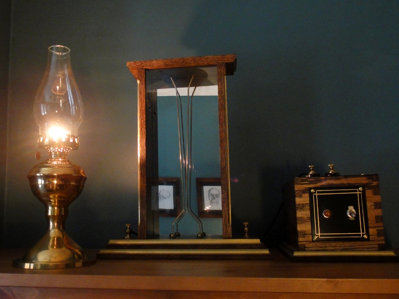
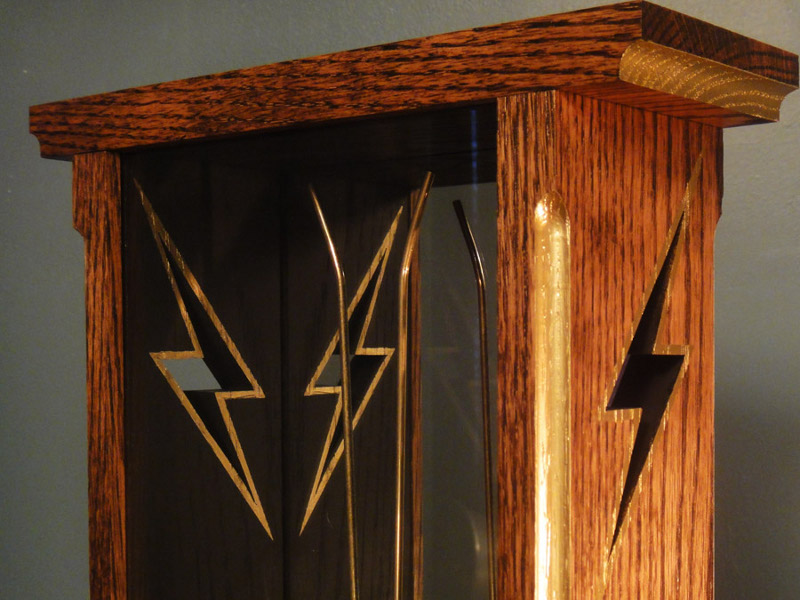
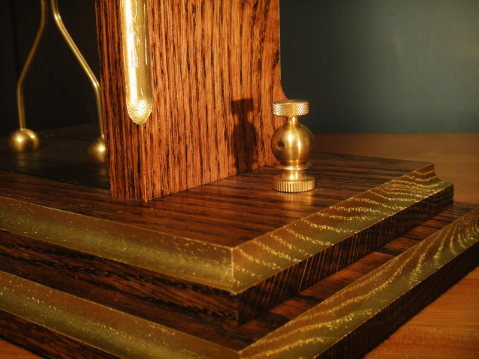

Jacob's Ladder Jacob's Ladder
Jacob's Ladder Jacob's LadderThe electrical demonstraton known as the Jacob's ladder takes its name from the story in the Hebrew Bible in which Jacob dreams of a ladder to heaven, though the display requires some imagination to see in it a ladder. A more descriptive name might be "high-voltage traveling arc." I made my first Jacob's ladder many years ago from two pieces of wire stuck in a scrap of 2 x 4. This one is slightly more ambitious.
This Jacob's ladder is made from solid oak and brass, with a glass front and mirror back. The inside of the cabinet is painted with ceramic paint to avoid scorching when the arc is at the top of its travel. The reason for the lightening bolt cut-outs is twofold: First, they allow heat and ozone to escape the cabinet (an electric arc in the open air generates ozone); and second, they allow some slight movement of air across the top of the electrodes, without which, the arc may be disinclined to extinguish.
The brass electrodes are very carefully spaced so as to breakdown at the bottom and extinguish the arc at the top. The vital measurement is that across the gap at the bottom. The electrodes must be close enough together at that point for the power source (in this case, my 10,000 volt oil furnace ignition transformer) to strike an arc, but not so close that it remains the path of least resistance. The rising arc effect is due to the superheated, ionized air directly above the arc presenting a more conductive path. The nature of electricity is to find the path of least resistance, thus, the rising, hot air carries the arc with it until the electrodes grow far enough apart that the arc cannot be sustained. The potential difference of the electrodes again rises until breakdown, and the process repeats.
The arc heavily oxidizes and vaporizes the metal of the electrodes, meaning that frequent use of the device would one day require electrode replacement, and may occasionally require cleaning to maintain performance. To that end, the cabinet is removable via two 1/4" screws passing through the base. Thus far, I have used the Jacob's ladder only infrequently, and have not needed to service the electrodes.
The binding posts were designed to accept up to 10 gauge wire, and as I have no lathe, they are soldered together from drilled and tapped 5/8" brass balls and knurled thumb nuts. It took a cousin to point out that, being entirely exposed, anyone who touched one of the binding posts while the Jacob's ladder is in operation is at risk of electrocution. Perhaps I have become too accustomed to dealing with high voltages and no longer perceive the dangers.
Created by Sean Corron, April 2, 2011.